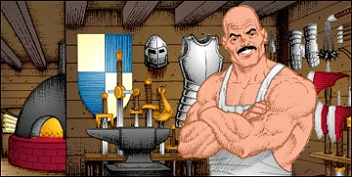

<< Previous Chapter | Table of Contents | Next Chapter >>
CHAPTER VI
WEAPONS AND ARMOUR
OF THE REALM
WEAPONRY:
HANDS. If thou lose all of thy weapons, this is what thou hast left. Although it is possible to kill some of the lesser monsters with thy bare hands, the odds of success truly are not very high.
STAFF. A six foot piece of carved ironwood that has been magically attuned, the staff sold in the weapons shop of Britain is more formidable than it seems. It is the favorite weapon of the Magi.
DAGGER. Ten inches of beautifully worked steel make the standard Britannian dagger. The traditional basket hilt looks very functional. A favorite weapon of novices.
SLING. The common sling is fashioned from twenty-four inches of cloth, folded in half, with a leather cup. The projectiles -- small rocks -- are easily collected, making this an inexpensive missile weapon. A perennial favorite with travellers down on their luck.
MACE. Upon the 1 1/2 inch thick oaken stem of the Britannian maces rests a globe of iron studded with knobs. The impact of this weapon has been known to shatter the skulls of enemies outright. A favorite among the Druids.
AXE. With a double-sided two-foot blade, a warrior wielding a battle axe can really wage war. The axe is a favorite among Tinkers, as many of them are workers of wood and metal.
SWORD. Ah, a true fighter's weapon. Four feet of wicked, blue steel will strike fear into the heart of any opponent. The sword is an automatic favorite among Fighters.
BOW. A truly competent long-range weapon. Get thy enemies before they can get thee! The Britannian bows are made from the finest yew wood. Each longbow is hand-rubbed and ornamented with horn nocks on the tips. A favorite among those with poor armour.
CROSSBOW. Now here is a real missile weapon. The impact of the crossbow will stop a rampaging troll. The crossbow is traditionally made of mahogany with a carved maple veneer on the sides depicting Lord British's device, the Silver Serpent. A favorite among Bards for the singing of the crossbow's string.
FLAME OIL. The use of flasks of Flame Oil constitutes an innovation in Britannia. Any of the Eight Great Professions can use it. The wielder casts the ignited oil in a chosen direction, creating a corridor of flaming oil which lasts several minutes. Any enemy entering the flaming oil suffers burn damage for each turn passed in the inferno. A favorite weapon among those badly hurt and in need of rescue -- a last ditch defense.
HALBERD. Seven feet of stout wood topped with a blade of deadly steel. The halberd requires excellent coordination to be used effectively. It is the most deadly of weapons in the hands of an expert, who uses it to strike over the heads of his fellows. A favorite among Paladins.
Several magical weapons are said to be found hither and yon, but the location of these are not known for certain. It is said that a traveller must be worthy of such a weapon before it will become available.

ARMOUR:
SKIN. What thou art left wearing when thou hast no armour at all.
CLOTH. Peasant's garb for those who can afford nothing better, or those restricted by the vows of their profession from wearing aught else. A reluctant favorite among Magi.
LEATHER. The workhorse of novice travellers, Leather armour is found throughout Britannia. Many of the professions are restricted to Leather as their best choice. A favorite among Bards, Druids, and Rangers.
CHAIN. Used by those who can handle the weight of chain mail while fighting, this armour offers excellent protection. Only the finest steel is used, with double thickness on the shoulders. All links are individually riveted for strength. A favorite among Fighters and Tinkers.
PLATE. The aristocrat of the armourer's craft, Plate affords more protection than any other conventional armour. Each suit is tailor made to thy shape. The cost is naturally sizable, but the effect is inspiring. A favorite among Paladins.
As is the case with weaponry, rumors abound of magical armour that will withstand the breath of a dragon. But, who knows? Perhaps these are but rumors spread by Orcs to lure fighters into illusory searches resulting in death.

<< Previous Chapter | Table of Contents | Next Chapter >>
|